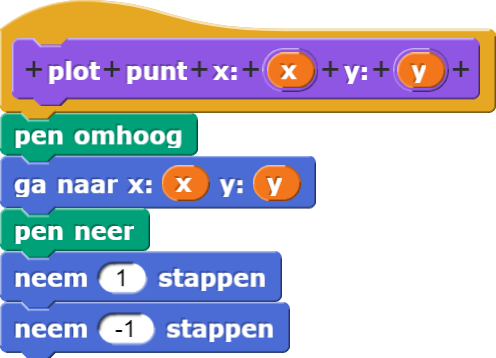
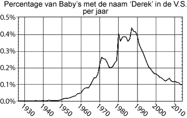
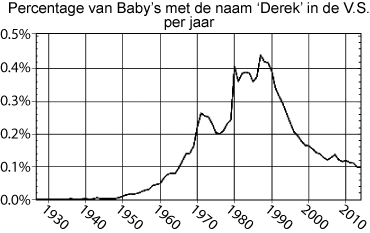
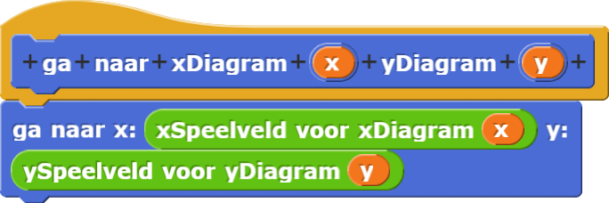

Een diagram-app maken
Een enkel punt plotten, als je zijn coördinaten hebt, zou zo simpel moeten zijn:

Dan kan je een lijst datapunten plotten door een blok zoals
 te maken net zoals je deed in Hoofdstuk 2 Les 2. Afhankelijk van het type diagram dat je wil, kan je de
punten wel of niet verbinden.
te maken net zoals je deed in Hoofdstuk 2 Les 2. Afhankelijk van het type diagram dat je wil, kan je de
punten wel of niet verbinden.
Dat lijkt alles te zijn wat je nodig hebt. Maar wat als de schaal van je data niet past op het
Snap!-speelveld (tussen -240 en 240 in de x)-richting en tussen -180 en 180 in de
y-richting)? Wat als je bijvoorbeeld de populariteit van een babynaam over tijd wil plotten, zoals
hieronder?
 

De jaren kunnen niet geplot worden op de horizontale as omdat de waardes buiten Snap!'s speelveld vallen. De percentages 0, 0.1, 0.2, 0.3 etc. zijn zo dicht bij elkaar dat ze allemaal hetzelfde lijken. Je zou het verschil in populariteit tussen 1960 en 1980 niet kunnen zien. We hebben een manier nodig om te wisselen tussen Snap! speelveld-coördinaten en de echte waardes, die we diagram-coördinaten zullen noemen, voor een gegeven set datapunten.
-

Het bevat een paar blokken die al voor je gemaakt zijn.- Klik op het
maak diagramschaalblok met de invoer die er al is (-2, 4, 30, 300) om te zien wat het doet. Naast het tekenen op het scherm, maakt het het ook een aantal variabelen die je andere blokken nodig zullen hebben zodat ze de afmetingen van het scherm weten. -
De volgende twee blokken rapporteren de speelveld-coördinaten van een punt
als de diagram-coördinaten van een punt gegeven zijn.
Experimenteer met de invoer van deze blokken zodat ze 0 rapporteren.
Hoe is de invoer gerelateerd aan de diagramschaal? - Gebruik
 met
dezelfde invoer. Waar wordt je sprite geplaatst?
met
dezelfde invoer. Waar wordt je sprite geplaatst?
- Zonder de positie van de sprite te veranderen, klik op en leg uit wat er gebeurt.
- Gebruik het blok om een script te maken dat de sprite zijn correcte diagram-coördinaten (niet zijn speelveld-coördinaten) laat zeggen van waar hij geplaatst is. Beweeg de sprite naar een aantal plekken op het speelveld om het script te testen.
Voor dit diagram moet een sprite in de rechter onderhoek van het speelveld (4, 30) zeggen, niet (240,-180). Om het gehele display van coördinaten te zien moet je het blok gebruiken (in het Functiespalet, gebouwd voor dit project) om de coördinaten af te ronden naar het aantal decimalen dat je wil zien. Een display van is logischer dan
is logischer dan
 in deze context.
in deze context.
- Klik op het
-
Experimenteer met verschillende invoeren voor
maak diagramschaalom te zien hoe de assen geplaatst worden en hoe de vervangende assen geplaatst worden als het punt (0,0) niet op het speelveld ligt. Sleep de sprite naar een aantal plekken om te zien of hij doet wat je verwacht. Verander dan de invoer vanmaak diagramschaalom te passen bij het bereik van de jaren en percentages van de data en klik erop om de schaal te resetten. Controleer opnieuw of de sprite zegt wat je verwacht als je hem over het speelveld beweegt.
-
Bouw het volgende blok dat de diagram-coördinaten van een datapunt
gebruikt en de sprite beweegt naar de speelveld-coördinaten die daarbij
horen.
.Het punt (1971, 0.25) ligt ongeveer in het midden bij het babynamendiagram van Derek. Controleer of
 werkt zoals je verwacht.
werkt zoals je verwacht.
- Bouw dan
 zodat het
gebruikt in plaats van
.
Controleer of het werkt zoals je verwacht.
zodat het
gebruikt in plaats van
.
Controleer of het werkt zoals je verwacht.
-
Bouw uiteindelijk
 om een punt te maken voor ieder datapunt.
(Voor dit diagram wil je dat de punten verbonden worden. Voor de data op de volgende pagina wil je
dat niet. Zorg er dus voor dat dit makkelijk is aan te passen in dit blok)
Pas het toe op
om een punt te maken voor ieder datapunt.
(Voor dit diagram wil je dat de punten verbonden worden. Voor de data op de volgende pagina wil je
dat niet. Zorg er dus voor dat dit makkelijk is aan te passen in dit blok)
Pas het toe op DerekData1927tot2015. De punten van je diagram kunnen wel of niet verbonden zijn en de assen zullen geen labels hebben, maar verder moet het lijken op de diagram hierboven.


- Sla je project op als "H3L4-DiagramApp".
-
Bedenk een manier om je diagram-app te vertellen dat hij de punten wel of niet moet verbinden voor
ieder diagram dat je maakt. Je wil hiervoor een Boolean-invoer gebruiken om aan te geven of de
punten verbonden moeten zijn of niet.